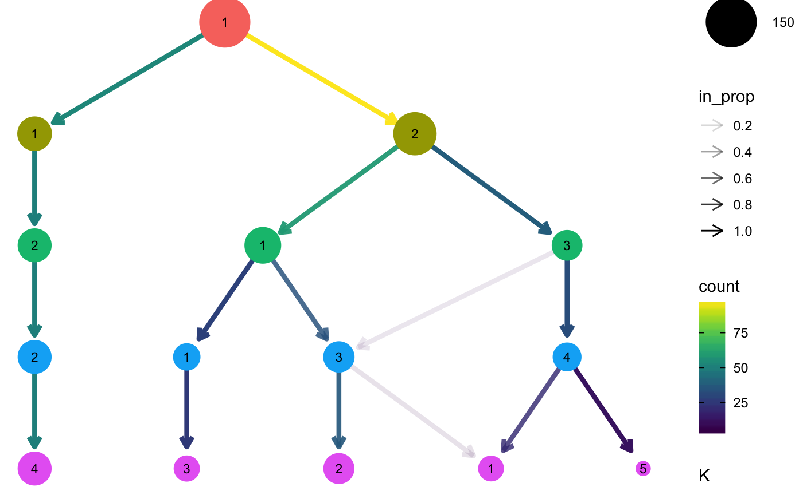
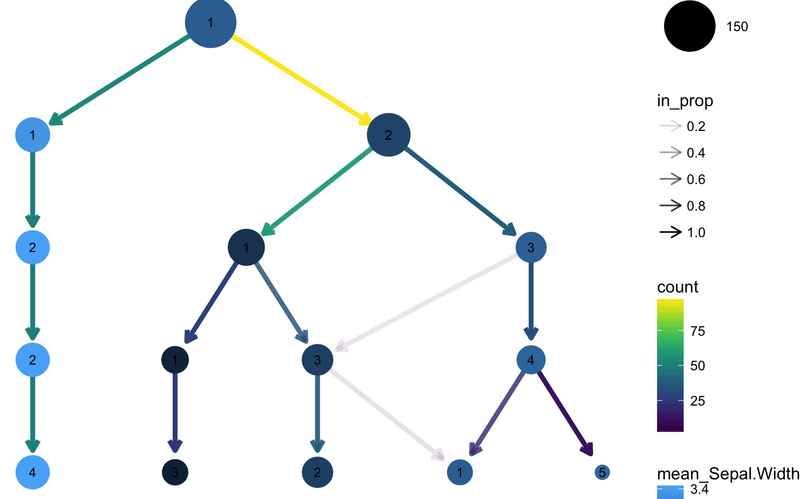
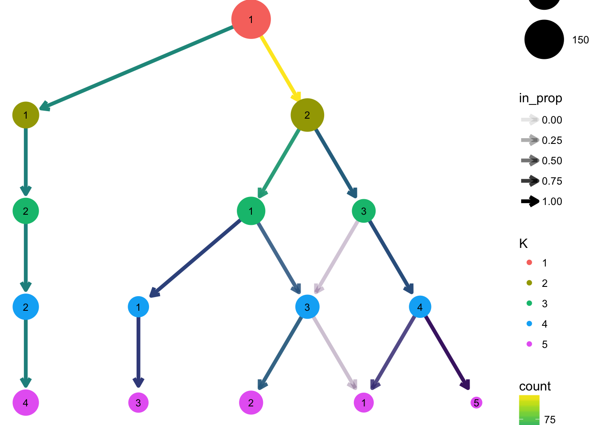
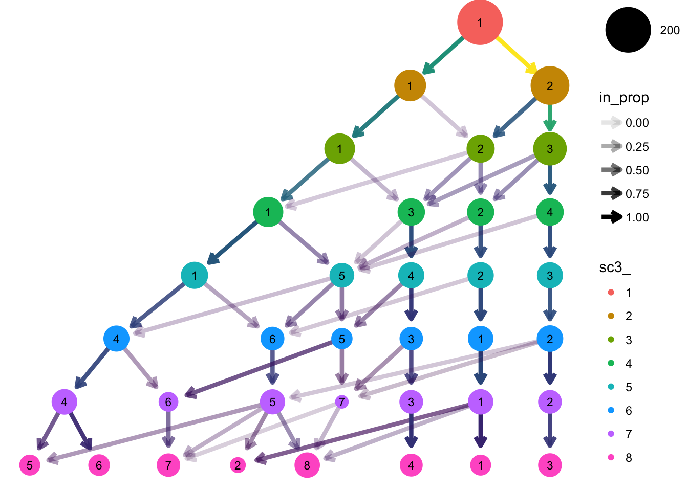
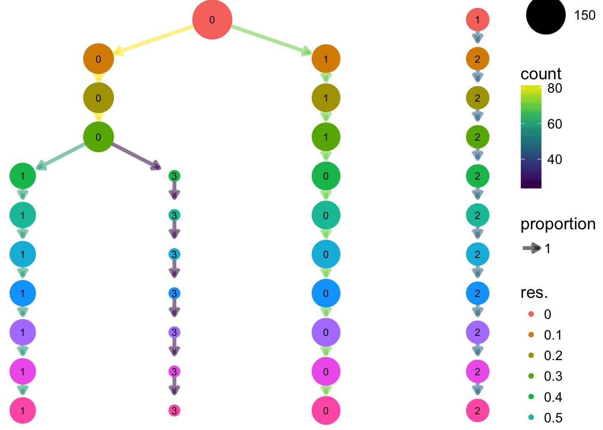
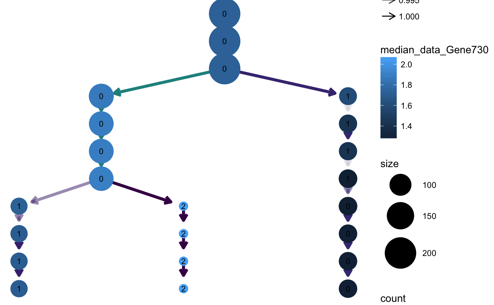
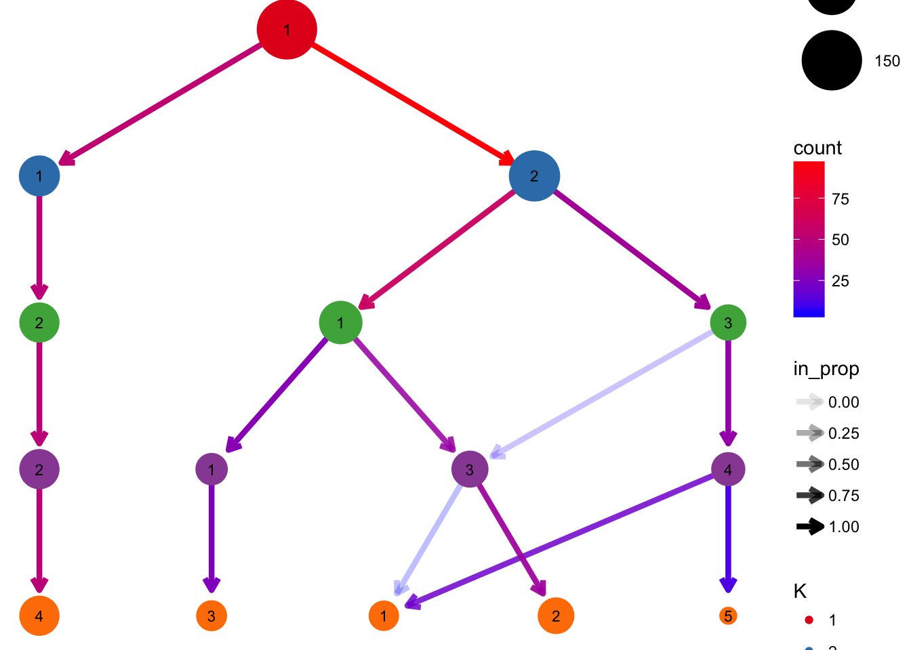
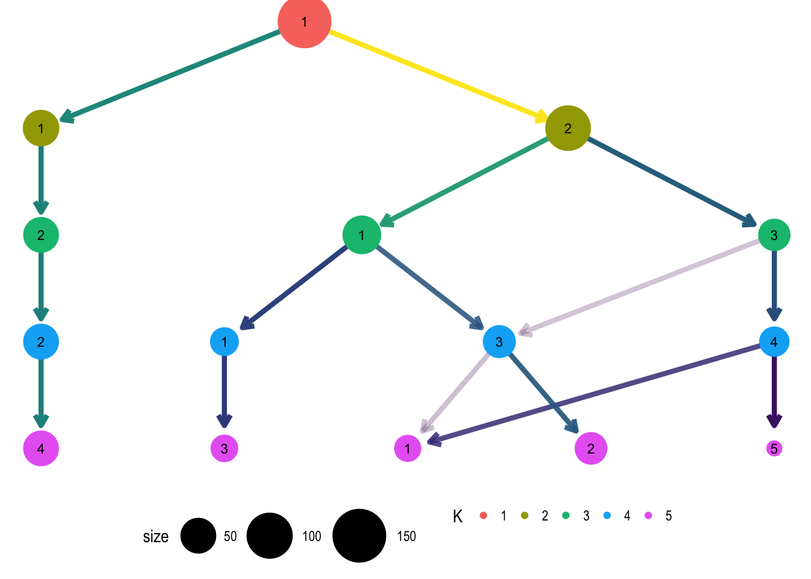

Plotting clustering trees
Luke Zappia
2018-03-23
What is a clustering tree?
Clustering analysis is used in many contexts to group similar samples. One problem when conducting this kind of analysis is how many clusters to use. This is usually controlled by a parameter provided to the clustering algorithm, such as \(k\) for \(k\)-means clustering.
Statistics designed to help you make this choice typically either compare two clusterings or score a single clustering. A clustering tree is different in that it visualises the relationships between at a range of resolutions.
To build a clustering tree we need to look at how cells move as the clustering resolution is increased. Each cluster forms a node in the tree and edges are constructed by considering the cells in a cluster at a lower resolution (say \(k = 2\)) that end up in a cluster at the next highest resolution (say \(k = 3\)). By connecting clusters in this way we can see how clusters are related to each other, which are clearly distinct and which are unstable. Extra information about the cells in each node can also be overlaid in order to help make the decision about which resolution to use.
A simple example
To demonstrate what a clustering tree looks like we will work through a short example using the well known iris dataset.
The data
The iris dataset consists of measurements (sepal length, sepal width, petal length and petal width) of 150 iris flowers, 50 from each of three species (Iris setosa, Iris versicolor and Iris virginica). For more inforation see ?iris. We are going to use a version of this dataset that has already been clustered. Let’s load the data and take a look:
library(clustree)
#> Loading required package: ggraph
#> Loading required package: ggplot2
data("iris_clusts")
head(iris_clusts)
#> Sepal.Length Sepal.Width Petal.Length Petal.Width Species K1 K2 K3 K4 K5
#> 1 5.1 3.5 1.4 0.2 setosa 1 1 2 2 4
#> 2 4.9 3.0 1.4 0.2 setosa 1 1 2 2 4
#> 3 4.7 3.2 1.3 0.2 setosa 1 1 2 2 4
#> 4 4.6 3.1 1.5 0.2 setosa 1 1 2 2 4
#> 5 5.0 3.6 1.4 0.2 setosa 1 1 2 2 4
#> 6 5.4 3.9 1.7 0.4 setosa 1 1 2 2 4Here we have a data.frame with the normal iris datasets, the measurements and species, plus some additional columns. These columns contain the cluster assignments from clustering this data using \(k\)-means with values ok \(k\) from \(k = 1\) to \(k = 5\).
Plotting a tree
This clustering information is all we need to build a clustering tree. Each column must consist of numeric values indicating which cluster each sample has been assigned to. To plot the tree we just pass this information to the clustree function. We also need to specify and prefix string to indicate which columns contain the clusterings.

We can see that one cluster is very distinct and does not change with the value of \(k\). This is the Iris setosa samples which are very different to the other species. On the other side of the tree we see a single cluster that splits into the two clusters we would expect to see. After this the tree becomes messier and there are node with multiple incoming edges. This is a good indication that we have over clustered the data.
Controlling aesthetics
By default the size of each node is related to the number of samples in each cluster and the colour indicates the clustering resolution. Edges are coloured according to the number of samples they represent and the transparency shows the incoming node proportion, the number of samples in the edge divided by the number of samples in the node it points to. We can control these aesthetics by setting them to specific values:

We can also link these aesthetics to other information we have about the samples. All the additional columns in the dataset are available to be added as attributes to the nodes in our tree. Because each node represents multiple samples as well specifying a column name we need to supply an aggregation function to use. Let’s try colouring the nodes according to the sepal width:

We can clearly see that the distinct cluster containing the Iris setosa samples has a wider sepal on average compared to the other clusters.
Layout
By default the tree is drawn using the Reingold-Tilford tree layout algorithm which tries to place nodes below their parents. Alternatively we could use the Sugiyama layout by specifying the layout argument. This algorithm tries to minimise the number of crossing edges and can produce more attractive trees in some cases.

Clustering trees for scRNA-seq data
Clustering has become a core tool for analysing single-cell RNA-sequencing (scRNA-seq) datasets. These datasets contain gene expression measurements from hundreds to hundreds of thousands of cells. Often samples come from complex tissues containing many types of cells and clustering is used to group similar cells together. To make it easier to produce clustering trees for these kinds of datasets we provide interfaces for some of the objects commonly used to analyse scRNA-seq data.
SingleCellExperiment
The SingleCellExperiment is one of these common objects, used across a range of Bioconductor packages. Let’s have a look at an example:
library("SingleCellExperiment")
#> Loading required package: SummarizedExperiment
#> Loading required package: GenomicRanges
#> Loading required package: stats4
#> Loading required package: BiocGenerics
#> Loading required package: parallel
#>
#> Attaching package: 'BiocGenerics'
#> The following objects are masked from 'package:parallel':
#>
#> clusterApply, clusterApplyLB, clusterCall, clusterEvalQ,
#> clusterExport, clusterMap, parApply, parCapply, parLapply,
#> parLapplyLB, parRapply, parSapply, parSapplyLB
#> The following objects are masked from 'package:stats':
#>
#> IQR, mad, sd, var, xtabs
#> The following objects are masked from 'package:base':
#>
#> anyDuplicated, append, as.data.frame, cbind, colMeans,
#> colnames, colSums, do.call, duplicated, eval, evalq, Filter,
#> Find, get, grep, grepl, intersect, is.unsorted, lapply,
#> lengths, Map, mapply, match, mget, order, paste, pmax,
#> pmax.int, pmin, pmin.int, Position, rank, rbind, Reduce,
#> rowMeans, rownames, rowSums, sapply, setdiff, sort, table,
#> tapply, union, unique, unsplit, which, which.max, which.min
#> Loading required package: S4Vectors
#>
#> Attaching package: 'S4Vectors'
#> The following object is masked from 'package:base':
#>
#> expand.grid
#> Loading required package: IRanges
#> Loading required package: GenomeInfoDb
#> Loading required package: Biobase
#> Welcome to Bioconductor
#>
#> Vignettes contain introductory material; view with
#> 'browseVignettes()'. To cite Bioconductor, see
#> 'citation("Biobase")', and for packages 'citation("pkgname")'.
#> Loading required package: DelayedArray
#> Loading required package: matrixStats
#>
#> Attaching package: 'matrixStats'
#> The following objects are masked from 'package:Biobase':
#>
#> anyMissing, rowMedians
#>
#> Attaching package: 'DelayedArray'
#> The following objects are masked from 'package:matrixStats':
#>
#> colMaxs, colMins, colRanges, rowMaxs, rowMins, rowRanges
#> The following object is masked from 'package:base':
#>
#> apply
data("sim_sc3")
sim_sc3
#> class: SingleCellExperiment
#> dim: 1000 200
#> metadata(2): log.exprs.offset sc3
#> assays(2): counts logcounts
#> rownames(1000): Gene1 Gene2 ... Gene999 Gene1000
#> rowData names(2): feature_symbol sc3_gene_filter
#> colnames(200): Cell1 Cell2 ... Cell199 Cell200
#> colData names(8): sc3_1_clusters sc3_2_clusters ... sc3_7_clusters
#> sc3_8_clusters
#> reducedDimNames(0):
#> spikeNames(0):This is an example simulated scRNA-seq dataset in SingleCellExperiment format that has been clustered using the SC3 package. For more details about this dataset and how it was produced see ?sim_sc3. The clustering information is held in the coldata slot.
head(colData(sim_sc3))
#> DataFrame with 6 rows and 8 columns
#> sc3_1_clusters sc3_2_clusters sc3_3_clusters sc3_4_clusters
#> <factor> <factor> <factor> <factor>
#> Cell1 1 2 3 4
#> Cell2 1 2 3 2
#> Cell3 1 1 1 1
#> Cell4 1 1 1 3
#> Cell5 1 2 3 4
#> Cell6 1 2 2 2
#> sc3_5_clusters sc3_6_clusters sc3_7_clusters sc3_8_clusters
#> <factor> <factor> <factor> <factor>
#> Cell1 3 2 2 3
#> Cell2 2 1 1 1
#> Cell3 5 4 4 5
#> Cell4 4 3 3 4
#> Cell5 3 2 5 8
#> Cell6 2 1 1 1We can plot a clustering tree in the same way we did with a data.frame. In this case the clustering column names contain a suffix that needs to be stripped away so we will pass that along as well.

Seurat
The same dataset is also available as seurat object that has been clustered using the Seurat package. See ?sim_seurat for details.
library("Seurat")
#> Loading required package: cowplot
#>
#> Attaching package: 'cowplot'
#> The following object is masked from 'package:ggplot2':
#>
#> ggsave
#> Loading required package: Matrix
#>
#> Attaching package: 'Matrix'
#> The following object is masked from 'package:S4Vectors':
#>
#> expand
data("sim_seurat")
sim_seurat
#> An object of class seurat in project SeuratProject
#> 1000 genes across 200 samples.In this case the clustering information is held in the meta.data slot:
head(sim_seurat@meta.data)
#> nGene nUMI orig.ident res.0 res.0.1 res.0.2 res.0.3 res.0.4
#> Cell1 503 4458 SeuratProject 0 0 0 1 1
#> Cell2 549 4722 SeuratProject 0 0 0 1 1
#> Cell3 504 3960 SeuratProject 0 0 0 0 0
#> Cell4 525 4822 SeuratProject 0 0 0 0 0
#> Cell5 492 4058 SeuratProject 0 0 0 1 1
#> Cell6 610 6780 SeuratProject 0 0 0 0 0
#> res.0.5 res.0.6 res.0.7 res.0.8 res.0.9 res.1
#> Cell1 1 1 0 0 0 0
#> Cell2 1 1 0 0 0 0
#> Cell3 0 0 1 1 1 1
#> Cell4 0 0 1 1 1 1
#> Cell5 1 1 0 0 0 0
#> Cell6 0 0 1 1 1 1Because this object is only used by the Seurat package we can assume the prefix of the clustering columns.

Using genes as aesthetics
As well as being able to use any additional columns for aesthetics we can also use the expression of individual genes. Let’s colour the nodes in the Seurat tree by Gene1. Again we need to supply an aggregation function.

Modifying appearence
The clustree function returns a ggplot object which can be modified using functions in the ggplot2 or ggraph packages. For example we could change the colour scales used for the nodes and edges:
clustree(iris_clusts, prefix = "K") +
scale_color_brewer(palette = "Set1") +
scale_edge_color_continuous(low = "blue", high = "red")
#> Scale for 'edge_colour' is already present. Adding another scale for
#> 'edge_colour', which will replace the existing scale.
Legends
The way ggplot objects is displayed is relative to the size of the plotting window or output file. While the main plot will always fit sometimes legends will be placed outside the visible area. One solution to this is to simply increase the size of the image. An alternative solution is to turn off some of the legends, either by setting some of the aesthetics to static values or by using the guides function. We could also move them to somewhere they might fit better. For example let’s remove the edge legends and move the rest to the bottom:
clustree(iris_clusts, prefix = "K") +
guides(edge_colour = FALSE, edge_alpha = FALSE) +
theme(legend.position = "bottom")